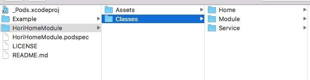
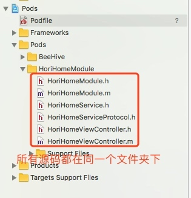
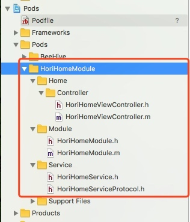
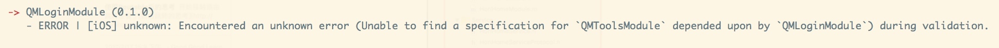

podspec开发介绍
podspec文件里面描述了库所有信息，所以怎么修改这个文件还是要花点时间，所以在这分析下该文件里面的内容还有有必要的。
Pod::Spec.new do |s|
s.name = 'HoriHomeModule'
s.version = '1.0.7'
s.summary = 'this is hori home module'
s.description = <<-DESC
TODO: Add long description of the pod here.
add BeeHive
DESC
s.homepage = 'https://gitlab.com/chenjiangchuan/HoriHomeModule'
s.license = { :type => 'MIT', :file => 'LICENSE' }
s.author = { 'jc' => 'jiangchuanc@gmail.com' }
s.source = { :git => 'https://chenjiangchuan@gitlab.com/chenjiangchuan/HoriHomeModule.git', :tag => s.version.to_s }
s.ios.deployment_target = '8.0'
s.source_files = 'HoriHomeModule/Classes/**/*'
s.frameworks = 'Foundation'
s.dependency 'BeeHive'
end
1、先从整体来看
# 这里等于是一个main函数
Pod::Spec.new do |s|
end
2、再分析内部
s.name： Pod的名称（可不修改）
s.version： Pod对应的版本号（更新Pod的时候，这里要对应的修改）
s.summary： Pod的简短说明（这里要修改，否则lint后会报错）
s.description： Pod详细描述
s.homepage： Pod的主页地址（修改）
s.license： Pod遵守的许可（可不修改）
s.author： Pod作者（可不修改）
s.source： Pod的项目地址（修改）
s.ios.deployment_target：Pod支持的最低iOS版本
s.source_files： Pod项目中代码所在的路径（这个很重要）
s.frameworks： Pod依赖的框架，依赖多个用,隔开
s.dependency： Pod依赖的第三方框架，依赖几个，就要写几个s.dependency
还有其它的就不一一列举
用法
所有源文件都在一个目录
这种情况是最简单的，即使你在Classes目录下创建了多个文件夹，但是没有在podspec对应设置，最终生成的Pod库，所有的文件都只会在一个目录下。
# podspec文件
Pod::Spec.new do |s|
s.name = 'HoriHomeModule'
s.version = '1.0.7'
s.summary = 'this is hori home module'
s.description = <<-DESC
TODO: Add long description of the pod here.
add BeeHive
DESC
s.homepage = 'https://gitlab.com/chenjiangchuan/HoriHomeModule'
s.license = { :type => 'MIT', :file => 'LICENSE' }
s.author = { 'jc' => 'jiangchuanc@gmail.com' }
s.source = { :git => 'https://chenjiangchuan@gitlab.com/chenjiangchuan/HoriHomeModule.git', :tag => s.version.to_s }
s.ios.deployment_target = '8.0'
s.source_files = 'HoriHomeModule/Classes/**/*'
s.frameworks = 'Foundation'
s.dependency 'BeeHive'
end
Classes目录结构，里面还有三个目录：

但是最终生成的Pod库，所有的源文件只会在一个目录下：

有文件夹结构分层
# podspec文件
Pod::Spec.new do |s|
s.name = 'HoriHomeModule'
s.version = '1.0.7'
s.summary = 'this is hori home module'
s.description = <<-DESC
TODO: Add long description of the pod here.
add BeeHive
DESC
s.homepage = 'https://gitlab.com/chenjiangchuan/HoriHomeModule'
s.license = { :type => 'MIT', :file => 'LICENSE' }
s.author = { 'jc' => 'jiangchuanc@gmail.com' }
s.source = { :git => 'https://chenjiangchuan@gitlab.com/chenjiangchuan/HoriHomeModule.git', :tag => s.version.to_s }
s.ios.deployment_target = '8.0'
# 第一层
# s.source_files = 'HoriHomeModule/Classes/**/*'
# 第二层
s.subspec 'Service' do |service|
service.source_files = 'HoriHomeModule/Classes/Service/*'
service.public_header_files = 'HoriHomeModule/Classes/Service/*.h'
end
# 第二层
s.subspec 'Home' do |home|
# home.source_files = 'HoriHomeModule/Classes/Home'
# 第三层
home.subspec 'Controller' do |controller|
controller.source_files = 'HoriHomeModule/Classes/Home/**/*'
# 如果Home/Controller目录下的文件依赖与Service目录下文件，这个依赖关系一定要写
# 而且注意路径，这里是HoriHomeModule/Service，而不是HoriHomeModule/Classes/Service
controller.dependency 'HoriHomeModule/Service'
end
end
# 第二层
s.subspec 'Module' do |modules|
modules.source_files = 'HoriHomeModule/Classes/Module/*'
# 如果Module目录下的文件依赖与Service目录下文件，这个依赖关系一定要写
modules.dependency 'HoriHomeModule/Service'
end
s.frameworks = 'Foundation'
s.dependency 'BeeHive'
end
最终效果如下：

在私有库中如何引用另一个私有库
和引用公开的CocoaPods库是一样的，在podsepc文件中添加：
s.dependency 'QMToolsModule'
再执行：
pod lib lint
但随后会报一个错误信息：

这是因为会去远程podspec库查找相关依赖，但是这是我们的私有库，所以报错，解决方法：
pod lib lint --sources='git@gitlab.com:chenjiangchuan/QMSpecs.git,https://github.com/CocoaPods/Specs.git'